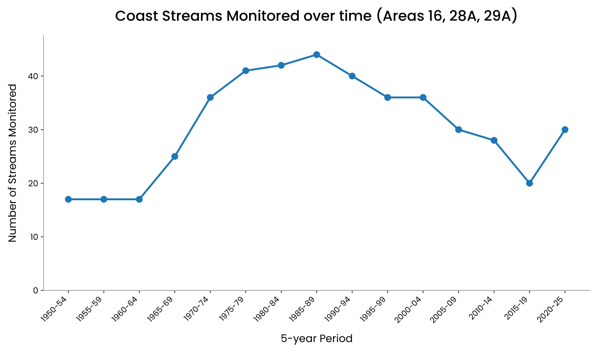
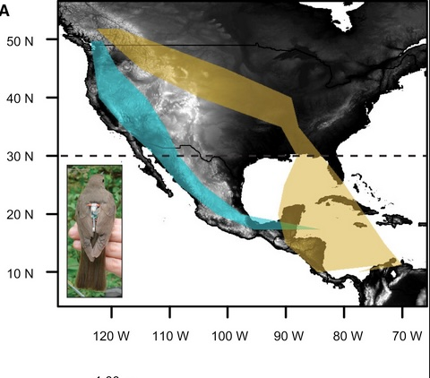

Biomonitoring increasingly fuels formal scientific research. This section will present a selection of interesting stories about biodiversity research on the Coast, and particularly those in which the biomonitoring programs of local non-profits have played or are playing a significant role. More to come!
Coast Biomonitoring Fuels Science
Monitoring for Fisheries, or for Fish?
First Nations communities in BC have observed salmon stocks for millennia, watching the runs return home year after year and passing that knowledge down through generations. The federal government's version of stock assessment began in the 1920s as handwritten letters from field supervisors: qualitative descriptions of runs (for example, "good", "average", "well seeded") that slowly formalized over the decades into quantitative estimates, which were finally consolidated in 1995 into a single public archive at Fisheries and Oceans Canada (DFO): the New Salmon Escapement Database. Today it's the most comprehensive record of how many salmon return to spawn across B.C. and the Yukon. A new study asks whether that record-keeping is still doing its job.
Led by Emma Atkinson of the University of Alberta, and including colleagues from the Pacific Salmon Foundation and Salmon Coast Field Station, the study traced monitoring effort across thousands of salmon populations from 1926 to 2023. The picture that emerges is a decades-long decline; "Almost two-thirds of historically monitored salmon populations have no reported estimates in 2014–2023—the worst decade for data since broadscale surveys began in the 1950s." Moreover, for at least three species, sampling effort closely tracks commercial catch value. As fisheries for particular species or regions shrank, or vanished, monitoring effort largely shrank with them. The researchers are careful to acknowledge that some of the apparent decline could reflect lags in getting data into the database, or ongoing surveys that never make it into the database. However, they argue that this decades-long association cannot be explained by these factors alone.
Why should this be a concern? Counting salmon is not meant to be about supporting fisheries alone. Canada's Wild Salmon Policy set out to conserve the full diversity of wild salmon, organized into conservation units, genetically distinct populations that, once lost, are gone for good on any human timescale. Monitoring only the handful of large, commercially valuable runs can create a false sense of security. For example, estimates based on a few large populations may look fine even as smaller, unique, unmonitored populations quietly disappear.
There has been an average decline of about 43 populations per year being monitored since 1986. Figure from Atkinson et al. 2025, Can. J. Fish. Aquat. Sci. 82: 1–18.
The paper closes with a five-part prescription for future monitoring of BC's salmon populations: redesign monitoring around tracking biodiversity rather than on supporting fisheries, fund it consistently rather than in one-off bursts, invest in emerging tools like eDNA, drones, and AI-assisted video counting, clean up and centralize the data that already exists, and build data-sharing practices that respect Indigenous Data Sovereignty alongside open-data principles (FAIR).
Local efforts are picking up much of the slack on the Coast.
Using the same data set as Atkinson et al., with the same caveats, monitoring of streams on the Sunshine Coast shows similar dramatic declines since the 1980s, from a peak of 44 streams in the late 1980s to 20 in the 2015–2019 period. This represents a decline of about 55%. However, even this should perhaps be viewed as an underestimate of the decline, because by 2018–2019, the shíshálh Nation, Sunshine Coast Streamkeepers, and Loon Foundation were already conducting the monitoring of several streams. Since the 2015–2019 period, there has been a substantial increase in the Coast streams being monitored (9 new streams), but this is entirely attributable to the work of the non-profits featured on this site and the shíshálh Nation. These recently added streams include a few that do not have a historical record of being monitored, including Colvin Creek, now monitored by the Sargeant Bay Society.
According to DFO's South Coast Salmon – Strait of Georgia Stock Assessment, by 2025 there were 29 streams monitored on the Coast between the Langdale area and the Jervis Inlet. About 25% of these are being monitored by DFO in collaboration with the shíshálh Nation, another 30% by the shíshálh Nation alone, and about 45% by the Coast non-profits featured on this page

Streams monitored over time on the Sunshine Coast. The data used by Atkinson et al. extends to 2023. For this figure, numbers from the DFO's South Coast Salmon – Strait of Georgia Stock Assessment extend the data to 2025.
Key Finding
Investment in counting Pacific salmon appears to have more closely tracked the fortunes of commercial fisheries than the needs of conservation, leaving four decades of accumulating blind spots in the data needed to conserve the genetic diversity of salmon and to detect and prevent the next potential collapse. Here on the Coast, where monitoring by DFO has also declined dramatically, much of it is being picked up by shíshálh Nation and the non-profits featured on this website. As noted by Atkinson and team, a great deal of research on stock declines and recoveries, as well as policy relies on these salmon counts.
Atkinson, E.M. et al. 2025. Monitoring for fisheries or for fish? Declines in monitoring of salmon spawners continue despite a conservation crisis. Can. J. Fish. Aquat. Sci. 82: 1–18.
Coast Biomonitoring Fuels Science
Counting Lice: Tracking a Tiny Threat to Wild Salmon
Sea lice, Lepeophtheirus salmonis, a salmon specialist, and Caligus clemensi, a generalist that also infects herring and stickleback, are marine ectoparasites that graze on the skin, muscle, and blood of their hosts. Neither survives in the freshwater where Pacific salmon spawn. Given that adults die soon after spawning, long before their offspring hatch and head to sea, there is limited opportunity for interaction between vulnerable juveniles and infected adults. Ecologists call this migratory allopatry, and historically it has kept lice loads on young salmon relatively low.
Open-net salmon farms disrupt that separation. Housing salmon in coastal waters year-round, farms can pick up lice from wild adults returning to spawn each fall, harbour and multiply them over winter, then pass them on to wild juveniles migrating past the following spring. Studies in British Columbia's Broughton Archipelago show lice loads on wild juvenile pink and chum salmon climbing sharply after they swim past farms, and dropping in years when farms sit fallow. Similar patterns have been reported in Europe.
Canada announced in 2024 it would ban open-net salmon farming in BC by June 30, 2029, and sea lice transmission to wild salmon was explicitly cited as a reason, alongside disease and escapes, backed by peer-reviewed research linking farm-origin lice to wild salmon declines. However, there is still debate around the closures. About half of BC's 100 farms have already closed. Prior to the federal ban, other provincial and First Nations closures had occurred, including in 2022 on the Coast in shíshálh territory.
Understanding sea lice well enough to manage them means tracking infection at every relevant distance: on juvenile salmon close to their natal streams, near active farms, and near farms sitting fallow, since each comparison isolates a different piece of the transmission puzzle. This kind of fine-grained monitoring is exactly what's been happening closer to home, in Pender Harbour.
For several years, Jenn Blancard of the Loon Foundation has been seine netting and enumerating juvenile salmon as well as counting the lice on them, sharing the resulting data with DFO. Recently, on the advice of sea lice expert Prof. Martin Krkošek (University of Toronto and Salmon Coast Field Station), Jenn began distinguishing between the two lice species and their life stages in her counts, rather than tallying lice as one group. That distinction matters more than it might sound: Lepeophtheirus salmonis and Caligus clemensi and their stages differ in how much harm they do to a host.
In May, two of Krkošek's graduate students (Kyra Ford and Erik Curtis) made the 3.5-hour crossing of the Salish Sea by 21-foot skiff to Irvine's Landing, and trained Jenn's team in lice identification, first with a dockside seminar minutes after they'd tied up, then hands-on with real samples. The data Jenn collects on infection will now feed directly into Krkošek's ongoing research on lice, farms, and wild salmon.
Key Takeaway
Sea lice remain a real threat to wild salmon, and local biomonitoring, like the work happening in Pender Harbour, is helping build the finer-grained picture researchers need. Programs like this often sharpen considerably with input from active researchers already working in the field.
University of Toronto graduate researchers Erik Curtis and Kyra Ford deliver a dockside seminar on sea lice and salmon at Irvines Landing. Their research centres on salmon parasites, including lice and lamprey.
iNaturalist began in 2008 as a master's project at UC Berkeley, built by Ken-ichi Ueda, Nate Agrin and Jessica Kline. What started as a small tool for sharing wildlife sightings grew rapidly: it became its own company in 2011, joined the California Academy of Sciences in 2014, partnered with the National Geographic Society in 2017, and in 2023 split off again as an independent nonprofit.
By 2025, iNaturalist held close to 300 million observations from more than four million registered users worldwide, documenting hundreds of thousands of species. A built-in AI suggests identifications for anyone unsure what they're looking at, while a global community of experts and enthusiasts weighs in to confirm or correct them. Observations that reach consensus become "Research Grade" and flow into the Global Biodiversity Information Facility. That data has already fed more than 4,000 scientific papers, on subjects ranging from shifting species ranges and flowering times to the discovery of species new to a region, or new to science entirely.
Here on the Sunshine Coast, that global platform has a distinctly local character: the Biodiversity of the Sunshine Coast Project logs observations on the Coast, covering everything from butterflies and dragonflies to lichens and kelp.
Retired physician and lifelong naturalist Rand Rudland has been central to building this local resource, filling in the region's record over the years with his own photographs consisting of about 13,000 observations of 1,500 species. Beyond his own observations, Rand has taken on teaching others how to use the platform with workshops and talks through local non-profit groups. There are now about 3,500 users who have contributed to the project.
No special expertise is required to take part. Anyone on the Coast with a camera or smartphone and some time outdoors, on a favourite trail, in the backyard, or along the shore at low tide, can open an account and start adding observations. Every well-documented observation can contribute to this global dataset feeding research on species distributions, climate-driven range shifts, and the spread of invasive species.
Key Takeaways
iNaturalist has grown from a graduate school project into one of the world's largest biodiversity datasets, powering thousands of scientific studies through crowdsourced and expert-verified observations.
On the Coast, that global resource is anchored by dedicated local naturalists like Rand Rudland, whose work building and teaching the platform locally connects Coast residents directly to the broader scientific enterprise.
As temperatures rise, mountain species are generally expected to move to higher, cooler elevations to survive, and many are already doing exactly that. Scientists have proposed three main ideas for how this plays out. The "escalator to extinction" suggests a species' range gradually creeps upslope until they simply run out of mountain. The "upslope lean" idea suggests species don't shift their whole range, but instead become more concentrated toward the upper end of where they already live. The "persist-in-place" idea suggests many species simply stay put and adapt.
These ideas are usually tested by tracking whether a species is present or absent in a given area over time. But this misses something important: how many individuals are there? Counting actual numbers gives a clearer picture of whether a population is truly healthy or quietly declining before it disappears from an area entirely. A species that still shows up in surveys could already be in serious trouble if its numbers are falling fast.
Here is a recent local study of birds on the move, including in Tetrahedron Provincial Park, that considered both presence/absence and abundance.
This study, led by Ben Freeman, looked at breeding birds in the old-growth forests of the Pacific Northwest over three decades of warming. Ben was a post-doc at UBC at the time he conducted the study. He had come across some mountain bird surveys conducted by F. Louise Waterhouse in the early 1990s, and recognized that he could build on these to test the reigning hypotheses for climate change effects on mountain species.
Basically, surveys were conducted by walking trails, stopping at a series of set stations, and listening to calls to estimate species' presence and abundance. With these data you can estimate elevational range and abundances within those ranges for each species. This is roughly what Waterhouse did in the early 1990s, and Ben and his team repeated in 2023. Contrasting these datasets and comparing them to temperature records allows one to test hypotheses about range shifts associated with climate change, including the escalator to extinction idea.
The species included in the study were Brown Creeper, Chestnut-backed Chickadee, Hairy Woodpecker, Olive-sided Flycatcher, Pacific-slope Flycatcher, Red-breasted Nuthatch, Red-breasted Sapsucker, Sooty Grouse, American Robin, Pine Siskin, Townsend's Warbler, Red Crossbill, Steller's Jay, Vaux's Swift, Hermit Thrush, Varied Thrush, Canada Jay, American Three-toed Woodpecker, Golden-crowned Kinglet, Pacific Wren, Dark-eyed Junco, and Swainson's Thrush. The surveys were conducted at several sites on mountains north and west of Vancouver.
Here is a figure from their 2025 paper in Ecology illustrating some key hypotheses and their results:
Figure from Freeman et al. 2025, Ecology — illustrating key hypotheses and observed results for mountain bird abundance shifts in the Pacific Northwest.
Key Finding
While ranges were not generally shifting, birds' overall peak abundance zones have shifted upslope at roughly the same rate as temperatures have, and this pattern provides support for the "upslope lean" idea. At present, there is little evidence of species heading toward extinction via the escalator effect, with one stark exception: the Canada Jay, a high-elevation bird, has declined sharply. Tracking abundance, rather than just presence/absence, will be important for spotting warning signs early enough to act.
Freeman, B.G. et al. 2025. Pacific Northwest birds have shifted their abundances upslope in response to 30 years of warming temperatures. Ecology, 106:e70193.
Coast Biomonitoring Fuels Science
Shining a Light on Dungeness Crab Larvae
The Sentinels of Change light trap network tracks the arrival of Dungeness crab larvae along the coast. Launched in 2022, this cross-border program connects scientists, resource managers, and coastal communities from Haida Gwaii down to Puget Sound in Washington. Sentinels of Change and Hakai have just released their 2025 Light Trap Network Report, which demonstrates the value of biomonitoring programs on the Coast.
Dungeness crab matter a lot. They've been a cornerstone of coastal Indigenous life for thousands of years and are one of the most valuable fisheries in both Canada and the US. Understanding how their larvae disperse and survive is key to helping managers keep crab populations healthy as oceans change.
Two local sites, Pender Harbour and Gibsons, are included in this study courtesy of local biomonitoring programs.
2025 was the network's fourth year, with 29 sites participating overall. From mid-April through early fall 2025, community partners checked traps every two days, counting and photographing any Dungeness larvae they caught to track size and abundance. Beyond tracking larvae, the network is also exploring how climate change affects young crabs, how crab populations are connected across the coast, and whether light traps can help detect invasive European green crab. While these studies are ongoing and the analyses just ramping up, the scale of the data collected so far is impressive.
Dungeness crab larvae from the Sentinels of Change Light Trap Network, 2025.
Takeaways from the report.
2025 was a low year for Dungeness crab larvae, with peak timing shifting earlier, from July to June, compared to previous years. Despite light catches, data quality improved thanks to strong partner commitment. With four full seasons now collected, the network is building a meaningful long-term dataset. Work is advancing on environmental modelling, population genetics, and climate linkages. In 2026, the network will expand monitoring, deepen analysis, and launch new research questions. Above all, the network's foundation remains its community-based biomonitoring efforts, including those on the Sunshine Coast.
As oceans warm and ecosystems shift, the birds that depend on them are quietly redistributing and a sweeping 20-year study of coastal waterbirds by de Zwaan et al. document dramatic shifts in distribution along BC's Pacific coast.
Researchers have recently tracked the winter occupancy of 57 waterbird species between 1999 and 2019. The picture that emerged is one of widespread decline, but with important regional twists.
The study rests on a remarkable foundation of volunteer effort. Since 1999, dozens of volunteers in BC, including a number within biomonitoring programs on the Sunshine Coast, have conducted monthly counts along 368 standardized shoreline routes from the Salish Sea to BC's northern coast. This citizen science program, the BC Coastal Waterbird Survey, has accumulated one of the richer long-term bird datasets on Canada's Pacific coast, and it's now paying scientific dividends.
The news was worst for the Salish Sea. Declines there were steep and broad, cutting across most feeding groups (diving ducks, fish-eaters, shellfish-eaters). The cause likely include both warming waters and a suite of impacts associated with human activities including pollution from urban runoff, nutrient loading from rivers, and dense coastal development combine to degrade habitat for species that depend on cold, productive waters.
However, on BC's North-Central coast the story appears quite different. Several species are actually holding steady or increasing there. The likely reason is that this area has maintained cold, less salty water that supports the prey species these birds depend on. In a warming world, these places may function as cold-water refugia.
The clearest signal from the data is directional movement. On average, waterbirds are wintering farther north than they did 20 years ago. Cold-tolerant species are retreating poleward or pulling back into fjord habitats. Meanwhile, herbivores and warm-tolerant species appear to be expanding northward into the Salish Sea from farther south, taking advantage of milder winter conditions there.
The study also tackled an important conservation question: do protected areas actually help? They found evidence that newer marine protected areas show genuine benefits because birds colonize them more readily and disappear from them less often.
Key Findings:
Protecting where birds are today is no longer sufficient. Effective conservation must also anticipate where they're heading tomorrow. Canada has committed to protecting 30% of its coastal waters by 2030, but sits at around 15% today. With birds on the move, static protection won't be enough. New protected areas, particularly along BC's North-Central coast, should target cold-water refugia and the corridors that shifting species now depend on.
de Zwaan et al. 2024. Occupancy trends of overwintering coastal waterbird communities reveal guild-specific patterns of redistribution and shifting reliance on existing protected areas. Global Change Biology 2024;30:e17178.
Research Story
How did Sunfish get into Trout and Colvin Lakes?
Many may have read the 2023 Coast Reporter story "Go fish: How fishers and scientists are racing to protect a world-famous species from invasives." The piece tells the story of the discovery of invasive pumpkinseed sunfish in Trout Lake, which are threatening and may have even led to the extinction of Trout Lake's population of the world-famous threespine stickleback. There will be more on this little fish, the stickleback, that has contributed so much to our understanding of the origin of species (Charles Darwin's "mystery of mysteries") later on this page.
The question does arise: how did the invasive sunfish get into Trout Lake? The answer suggested in the piece is that they were likely introduced deliberately around 2021. Perhaps they were accidentally introduced from a fisher's bait bucket, or perhaps intentionally for sport fishing. However, the piece also notes that sunfish have recently been found in the unconnected Colvin Lake at Sargeant Bay, where the presence of fishers seems unlikely.
One commonly invoked explanation for the movement of invasive fish across long distances to remote lakes is that fish eggs get stuck on the feathers or feet of waterbirds, which then transport them long distances. Even Darwin wrote about this potential phenomenon. However, recent surveys of the scientific literature have found no evidence directly supporting this idea. So how did the sunfish get into Colvin Lake?
Pumpkinseed sunfish by Lorenz Seebauer, Wikimedia Commons, licensed under http://creativecommons.org/licenses/by-nc/4.0/
Sargeant Bay Society streamkeeper, Dave Spicer, suggested that perhaps eggs of sunfish were consumed by birds in Trout Lake and then deposited in their faeces into Colvin Lake. At first pass, this seems even less likely than their being stuck to feet or feathers. These are delicate fish eggs (think caviar) passing through the gut of a vertebrate and surviving? However, a recent paper shows this is indeed possible.
Hungarian researchers, led by Ádám Lovas-Kiss, fed fertilized eggs of nine fish species to mallards and recovered viable embryos of several species from their droppings, with two species successfully hatching into larvae. The findings establish waterbird gut passage as a rare but plausible natural dispersal mechanism for fish eggs across isolated water bodies, independent of human introduction. Among the species whose eggs survived passage through the gut were pumpkinseed sunfish, though in this very small sample, none developed into larvae.
Key Finding
This new study suggests that fish eggs can indeed pass through a duck's digestive system and remain viable. This means that waterbirds such as ducks may be transporting invasive fish species, including pumpkinseed sunfish, to new lakes. We will probably never know how sunfish got into Trout or Colvin lakes, but this recent study suggests that a single human introduction may lead to further spread through the natural behaviour of ducks.
Lovas-Kiss et al. 2024. Bird-mediated endozoochory as a potential dispersal mechanism of bony fishes. Ecography 2024: e07124
Research Story
Stickleback and the Origin of Species on the Sunshine Coast
Local populations of this widespread little fish have transformed our understanding of the formation of new species. In the lakes and streams of the Coast, this small spiny fish barely the length of your finger has become one of science's most important windows into how new species come to be. And decades of research on the Coast plays a prominent role in these discoveries.
Speciation, the process by which one species splits into two descendant species, is notoriously difficult to study. It typically unfolds over a few million years, leaving scientists trying to reconstruct ancient events from fossils and genetic clues. Moreover, it is typically thought that a geographic barrier is necessary to isolate the populations and allow them to diverge and speciate. But in some lakes on the Coast sticklebacks appear to have speciated without a complete barrier and in a remarkably short period of time.
Stickleback species pair from Paxton Lake, British Columbia. Gravid benthic top, gravid limnetic bottom. Photo by Todd Hatfield.
After the last Ice Age, freed from the immense weight of ice sheets, rising land isolated populations of marine sticklebacks into lakes. In several of these lakes (Paxton, Priest, Enos and Hadley) something remarkable occurred. Rather than resulting in a single freshwater adapted form in each lake, two distinct types evolved from a single ancestor: an inshore form known as the benthic, and an open-water form known as the limnetic. These two species found living side by side in the same lake, have become so specialised in their body shapes, behaviours, and resource use that they rarely interbreed. Similar divergence in body form, behaviour, resource use and even genetics, appears repeatedly across separate lakes. This and the recency of the divergence has allowed researchers to study, both by observation and experiment, the processes that underlie speciation itself. These insights are shedding light on what Darwin referred to as "the mystery of mysteries".
The UBC Experimental Ponds where researchers in Prof. Dolph Schluter's group study the processes involved in the evolution of new species. Photo by Dolph Schluter.
One of the main goals of these studies is to understand what is special about these few post-glacial lakes that have facilitated the evolution of two types, rather than one, which is more typical in nearby lakes. It turns out that rather precise ecological conditions are required, an understanding of which helps researchers to understand the process of speciation itself. However, it also means that ecological disturbance can lead to the collapse of the species pair into just one. This is exactly what happened to the Enos Lake populations on Vancouver Island with the introduction of signal crayfish. At Hadley Lake on Lasqueti Island, the introduction of brown bullhead catfish resulted in the extinction of both populations.
This left just two known populations, Paxton Lake and Priest Lake (a chain of 3 lakes) on Texada Island, putting at risk one of evolution's great stories. Thankfully, in 2007, a new species pair was found in the previously unexplored Little Quarry Lake on nearby Nelson Island. Involved in that important discovery, and the resulting publication, was Michael Jackson, the long serving past Executive Director of the Loon Foundation.
Takeaways:
Research on the Sunshine Coast has made remarkable contributions to our understanding of biodiversity. The species pairs have become known, worldwide. Insights from study of the Coast stickleback comprise one of the greatest contributions to the resolution of one of evolution's greatest mysteries — the origin of species. Finally, Coast non-profits and their members have been closely involved in this research.
Gow et al., 2008. Ecological predictions lead to the discovery of a benthic–limnetic sympatric species pair of threespine stickleback in Little Quarry Lake, British Columbia. Can J. Zool. 86: 564–571.
Coast Biomonitoring Fuels Science
Mapping the Nurseries of the Salish Sea: Pacific Sand Lance Spawning Habitat
Beneath the surface of the Salish Sea, a small, slender fish quietly contributes much to the marine food web. Pacific sand lance rarely make headlines, but they are everywhere in the diets of the animals that do: salmon, seabirds, humpback whales, and the critically endangered southern resident killer whales. Between spring and fall, sand lance make up a large portion of prey consumed by the Chinook salmon, which in turn are relied upon by resident killer whales. Yet until recently, scientists had a surprisingly incomplete picture of where these fish actually breed here in the Pacific northwest.
Sand lance are unusual fish. Lacking a swim bladder, they bury headfirst into coarse, silt-free sand to rest, hide from predators, and ride out winter in a kind of dormancy. In the colder months, they come to the intertidal zone to spawn, laying sticky eggs that attach to individual sand grains and incubate for one to three months before hatching. The beaches where this happens are specific and rare, and identifying them has been one of the more pressing gaps in coastal conservation science.
Community Science Meets Habitat Modelling
A recent study by Huard et al. has gone a long way toward filling that gap. Over nearly two decades, community scientists, First Nations members, independent biologists, and Fisheries and Oceans Canada conducted more than 1,000 intertidal surveys along beaches across the Canadian Salish Sea, searching for sand lance eggs in sand samples examined under dissecting microscopes. By 2020, eggs had been detected on more than 90 beaches. Using this dataset and a modelling approach called MaxEnt, which is well suited to the kind of presence-only data that community science generates, researchers identified the environmental conditions that best predict where suitable spawning habitat is likely to occur.
Sand lance habitat suitability modelling study area within the Salish Sea. Triangles are where sand lance eggs have been observed. From Huard, J.R. et al., 2022.
A Rare and Patchy Habitat
Suitable intertidal spawning habitat turns out to be genuinely scarce. The model estimates that only about 5.4% of the intertidal zone in the Canadian Salish Sea has a moderate to high likelihood of providing the conditions sand lance need. Proximity to estuaries was the strongest predictor, not because estuaries themselves are suitable, but because they supply the coarse sand that waves and currents sort into the grain sizes sand lance require. Beach slope came second, with slopes between roughly 4° and 10° hitting a sweet spot where energy is sufficient to flush out fine silts without washing suitable sand away entirely.
Critically, only about 8.5% of this predicted habitat currently falls within a protected area. Sand lance show strong site fidelity, returning year after year to the same patches of sediment, which makes them especially vulnerable to habitat loss from shoreline armouring, dock installation, and coastal development. Current Canadian law permits armouring up to the mean high-tide line, leaving intertidal spawning habitat with limited legal protection.
The authors describe the model as a "living process," intended to be refined as survey coverage expands and new approaches like environmental DNA become available. The next steps will continue to depend upon people willing to walk beaches in winter and peer through microscopes looking for eggs the size of a grain of rice. Here on the Coast, this will include a number of non-profits and their volunteers engaged in biomonitoring of these forage fish.
Key Finding
Only 5.4% of the Canadian Salish Sea's intertidal zone is predicted to offer suitable spawning habitat for Pacific sand lance, a keystone forage fish supporting salmon, seabirds, and whales. Less than 9% of that habitat is currently protected. The model, built on nearly two decades of community science data, can now help guide marine conservation planning across the BC coast.
Huard, J.R. et al. 2022. Predictive habitat modelling of Pacific sand lance (Ammodytes personatus) spawning habitat in the Canadian Salish Sea. Can. J. Fish. Aquat. Sci. 79: 1681–1696
Research Story
Two Roads South: The Divided Migration of Swainson's Thrushes
The Swainson's Thrush is a small, spotted songbird that breeds across the boreal forests of North America and winters in Central and South America. Along the coast mountains of British Columbia, a coastal form and an inland form meet and interbreed in a narrow hybrid zone. The coastal form breeds on the Sunshine Coast. Scientists suspected that these neighbouring populations diverge sharply in their migration routes, but the evidence had rested mainly on band recovery records and genetics rather than direct observation of individual birds.
To put the idea to a more rigorous test, Kira Delmore and Darren Irwin attached light-level geolocators to thrushes caught on both sides of the hybrid zone. Among these tagged coastal birds were 10 from the Sunshine Coast. These small devices record daily light patterns that can be translated into approximate locations, making it possible to follow individual birds through a complete annual cycle. The approach offered a far more direct window onto migration than banding records alone, and what it revealed was striking.
Coastal Swainson's Thrushes flew south along the Pacific corridor, wintering in Mexico, Guatemala, and Honduras. Many of these birds did not settle in one location for the non-breeding season but moved between two or more wintering sites, suggesting that their winter behaviour is more flexible and complex than previously appreciated.
Inland birds followed an entirely different path. They crossed the Rocky Mountains, moved through central North America, and continued south all the way to Colombia and Venezuela, which is a considerably longer journey. Their routes often formed a loop: crossing the Gulf of Mexico heading south in autumn, then returning by a different path in spring. This loop migration means the two groups not only winter in different regions but travel through different parts of the continent in each season.

Polygons show routes taken by pure allopatric coastal (blue) and inland (yellow) thrushes tracked on fall. From Delmore et al., 2016.
The findings also shed light on how migratory behaviour may contribute to keeping the two groups separate. Neighbouring populations that travel in opposite directions and spend the winter thousands of kilometres apart have few opportunities to interact outside the breeding season. Different ecological pressures along those contrasting routes may reinforce the biological differences between groups over time, even where no sharp physical barrier divides their breeding ranges.
Perhaps the most practical implication is for conservation. Protecting the forests where these birds nest is not enough on its own. A Swainson's Thrush depends on a chain of stopover sites and wintering areas spread across several countries, and disrupting any link in that chain could affect populations far to the north. For migratory songbirds crossing multiple borders, effective conservation must span the full annual cycle.
Updates: More recent work has shown that, remarkably, some hybrids tend to take an intermediate migratory route to the coastal and inland forms. And in another recent study by the same group, they have been able to identify genetic differences between the two forms that are clustered on a single chromosome and suggest a gene package for migration.
Key Finding
This study confirmed a genuine migratory divide between inland and coastal Swainson's Thrushes breeding near the hybrid zone in British Columbia. Coastal birds, including those residing on the Sunshine Coast, travel south along the Pacific corridor to winter in Mexico and Central America; inland birds make a much longer journey to northern South America via the continental interior, often completing a loop migration. The routes diverge so sharply that neighbouring populations effectively lead separate lives for most of the year, which is a pattern with implications for their evolution, ecology, and conservation across the full annual cycle.
Delmore et al., 2012. Dramatic intraspecific differences in migratory routes, stopover sites and wintering areas, revealed using light-level geolocators. Proc. R. Soc. B 279: 4582–4589
Delmore and Irwin, 2014. Hybrid songbirds employ intermediate routes in a migratory divide. Ecology Letters 17: 1211–1218.
Delmore et al., 2016. The genetics of seasonal migration and plumage color. Current Biology 26: 2167–2173.
Coast Biomonitoring Fuels Science
Citizen Science at Hotel Lake: Tracing the Diet of an Invasive Jellyfish
In summer, as the water in Hotel Lake warms past 21°C, something strange can happen: thousands of pale, coin-sized jellyfish drift through the shallows. The jellyfish, Craspedacusta sowerbii, is native to the Yangtze River Valley but has now spread to lakes on every continent except Antarctica, likely hitching rides on boat hulls, aquarium releases, and the feet of waterfowl. In Hotel Lake, the first sightings date back to 2001, but for years little was known about what these invasive jellyfish might be doing to the local food web.
That gap is starting to close, thanks to a remarkable partnership between UBC researchers and a small crew of local volunteers in the Hotel Lake Advisory Association. This remarkable collaboration between a local non-profit and university researchers is described in engaging detail here and here is a Coast Reporter story. Below, a new portion of that work is described.
In 2023, Dr. Florian Lüskow and Professor Evgeny Pakhomov of UBC trained six Hotel Lake residents to collect jellyfish samples and lake data on a recurring schedule, work that has since grown into the Hotel Lake Stewards, a group now nine volunteers strong and operating year-round. Their samples have fed directly into new UBC graduate research, including a 2026 thesis by Johanna Marshall aimed at determining the diet of these invasive jellyfish, and therefore their potential consequences for the lake ecosystem.
Using stable isotope analysis, a technique that traces feeding relationships by measuring how carbon and nitrogen ratios shift as they move up the food chain, Marshall compared jellyfish tissue in 2025 to tissue from zooplankton (a food source), competing stickleback, and larval midges. The jellyfish, as expected, were eating zooplankton like water fleas and copepods. But they were also feeding on microzooplankton and fine particles of algae and organic matter, representing a broader diet than either the fish or the midges. That difference may be exactly what allows all three to coexist in the lake rather than compete head-on.
A companion research poster, presented in Cork, Ireland this July by UBC's Dana Halay, suggests that in high-density years, jellyfish may sharply reduce zooplankton numbers and alter their relative composition. The knock-on effects may reach both lower and higher trophic levels: more phytoplankton, a greener lake, and reduced fish production, including cutthroat trout.
Key Takeaways
None of this research would happen without the recurring, disciplined work of volunteers. What began in 2023 as six trained volunteers has grown into the Hotel Lake Stewards, a year-round program that has become a genuine research partner to UBC scientists.
That kind of sustained local commitment is one way that citizen science can enable new research. It is also a model the Hotel Lake Advisory Association and the Hotel Lake Stewards have proven particularly good at: pairing steady, homegrown observation with the expertise of visiting researchers, so that questions which might otherwise sit unanswered for lack of data instead turn into published science.
Marshall, J.M. 2026. Trophic ecology of the invasive freshwater jellyfish Craspedacusta sowerbii, revealed through stable isotope analysis. University of British Columbia.
Research Story
Tracking Oystercatchers Reveals Habitat Choices That Trade Off Foraging & Avoiding Predators
Black oystercatchers, the striking orange-billed shorebirds that patrol our rocky shorelines, are considered an indicator of a healthy intertidal zone. They feed on large invertebrates, including mussels, limpets and clams. To manage or support their populations requires knowing their habitat use; however, almost all previous information on habitat use comes from breeding-season studies, when territorial pairs are focused on protecting young and are incidentally easy to find and watch. What oystercatchers do the rest of the year, and how their needs shift within the day, the tide, and the season, was largely a mystery.
A 2023 study led by Lena Ware and colleagues from Simon Fraser University and Environment and Climate Change Canada set out to fill that gap. The team fitted 20 oystercatchers from four BC regions, including the Sunshine Coast, with solar-powered satellite tags and tracked them for up to a year. A 2024 companion study by Rankin and colleagues from the same group tested the impact of these tags on survival and found no evidence that birds carrying the harness-mounted tag used in the tracking study suffered any greater mortality than colour-banded control birds.
The habitat-use results suggest a pattern where birds weigh safety from predation against higher foraging success. Oystercatchers strongly favoured small, treeless rocky islets and avoided shoreline with tree cover, likely because trees can conceal eagles and other predators. That preference held at nearly every time of day and season, and especially during high tides and after dark, when the birds are most exposed to predation risk. Preferences tied to foraging, like shoreline near freshwater outflows and areas with more intertidal habitat, showed up mainly outside the breeding season when the need to defend a nest has eased, and during the day and at low tide, when feeding is best.
The outflow finding was a genuine surprise. Oystercatchers are considered rocky-shore specialists, yet they made repeated, targeted use of stream mouths, especially those with gravel bottoms and wide intertidal flats. The authors suspect these areas may matter more to the birds' diet than previously thought, possibly because of dense clam populations.
Home range size varied enormously by region, and Sunshine Coast birds stood out with by far the largest ranges of the four sites, strikingly larger than those in the other three regions. The authors suggest this may reflect greater human disturbance along our stretch of coast, pushing birds to range further for safe, productive habitat.
Key Finding
Black oystercatcher habitat needs shift constantly, trading off predation risk against foraging reward depending on season, time of day, and tide. Protecting this indicator species will require protecting a set of habitat features (e.g., safe treeless islets alongside productive freshwater outflows) rather than just one type of shoreline.
Ware, L., Hipfner, J.M., & Green, D.J. 2023. Satellite telemetry reveals habitat selection decisions by black oystercatchers across seasonal, diel, and tidal cycles. Ecology and Evolution, 13: e9957.
Rankin, C.M., Ware, L., Robinson, B.H., Esler, D., Coletti, H., Maftei, M., Hipfner, J.M., & Green, D.J. 2024. Evaluating effects of tracking device attachment methods on Black Oystercatchers Haematopus bachmani. Wader Study, 131(3): 204–213.